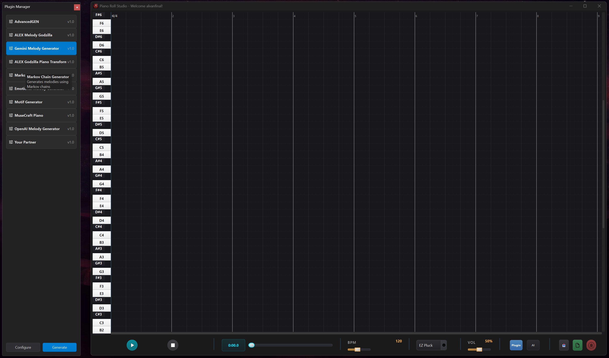
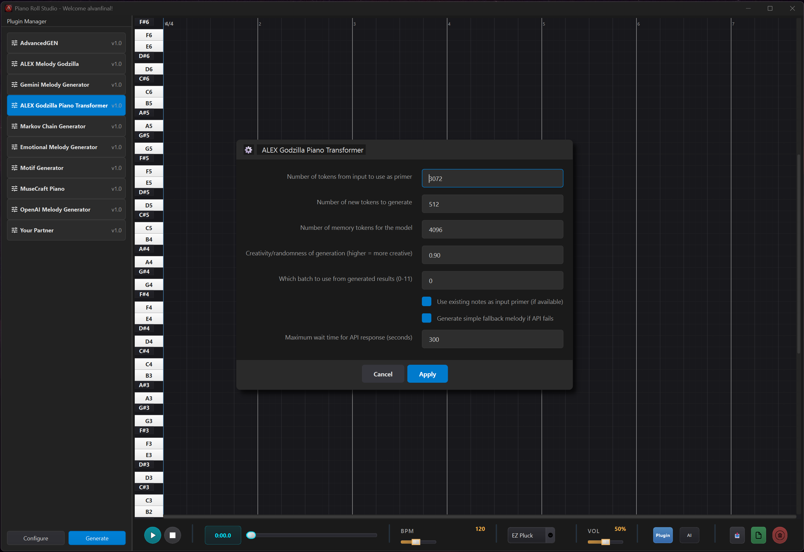
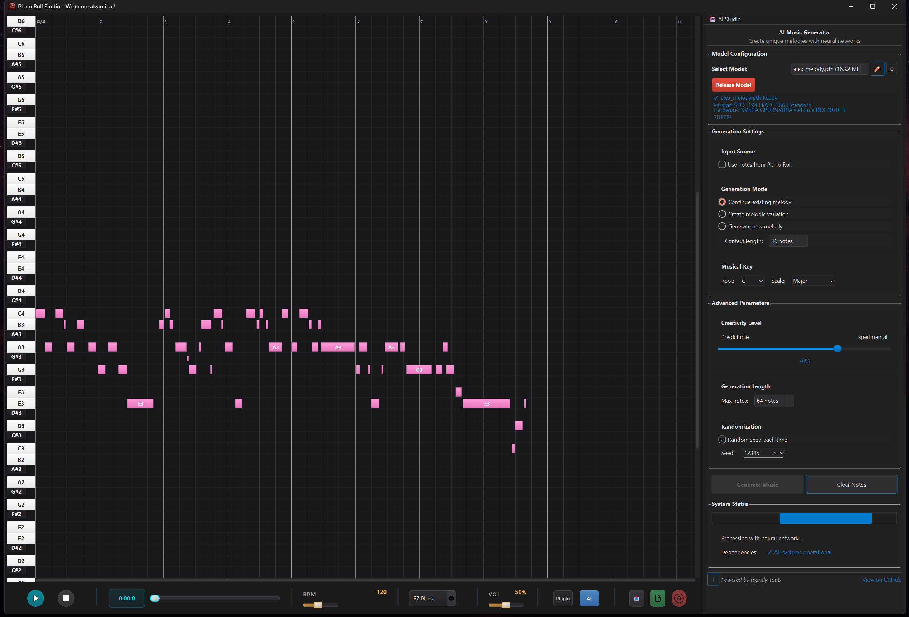

Transform your musical ideas into reality with our intelligent piano roll editor

🎼 Modern Piano Roll Interface with Grid and Note Visualization
Intuitive grid lines, time ruler, and MIDI note visualization
Neural network models from Melody Model and X-Transformer
Run motif, Markov, and custom generation logic
Save with velocity/pitch embedded for any DAW
Beat-synced transport with FluidSynth integration
Extend functionality with custom .py files
See how our AI-powered piano roll transforms your musical ideas into reality
Professional-grade piano roll with intuitive controls, color-coded velocity, and seamless zoom functionality for precise MIDI editing.

Powerful AI-driven plugins with customizable parameters. Run neural networks, Markov chains, and custom algorithms with just a few clicks.

Watch AI create music in real-time. Neural networks analyze patterns and generate unique melodies, harmonies, and rhythms instantly.
Easily extend the application with your own Python plugins
class MyCustomGenerator(PluginBase):
def generate(self, **params):
return [
pretty_midi.Note(
pitch=64,
velocity=100,
start=0.0,
end=0.5
)
]Define generate() and return a list of PrettyMIDI notes. Add an optional get_parameter_info() to customize UI controls per plugin.
Join thousands of musicians already using our AI-powered piano roll to create incredible music